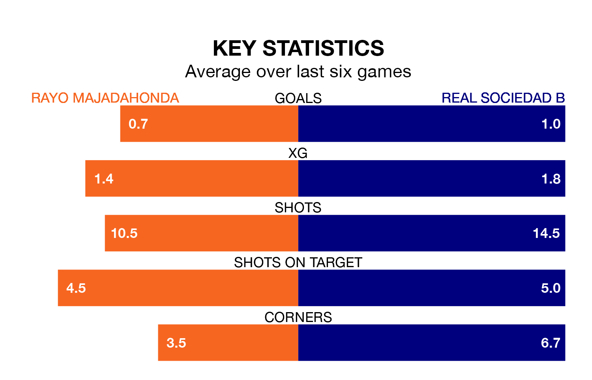

Real Sociedad B come to Miniestadio Cerro del Espino to play Rayo Majadahonda on late Sunday in terrible form, having collected just two points from their last six games.
The visitors have drawn two and lost four of their last six fixtures, while Rayo have a win and three draws.
Rayo are 17th in the table after 22 games, of which they have won four and drawn nine, earning 21 points.
Sociedad B are 10 places ahead of the hosts in seventh, with seven wins and 10 draws putting them on 31 points.
With 18 goals in 22 games so far this season, Rayo are scoring at below the league average rate with 0.8 goals per game. And they are conceding more than average, letting in 27 goals at a rate of 1.2 per game.
The away side, meanwhile, are above average scorers, with 1.1 goals per game, compared to a league average of 1.0. They have conceded 1.0 goal per game.
Rayo's last match was on February 4, a 1-1 draw against CE Sabadell, with Rubén Enri García getting the goal for Rayo.
Sociedad B lost 2-0 against Gimnàstic de Tarragona last time out, also on February 4.
Updated: 10:28 (UTC), 06/02/24